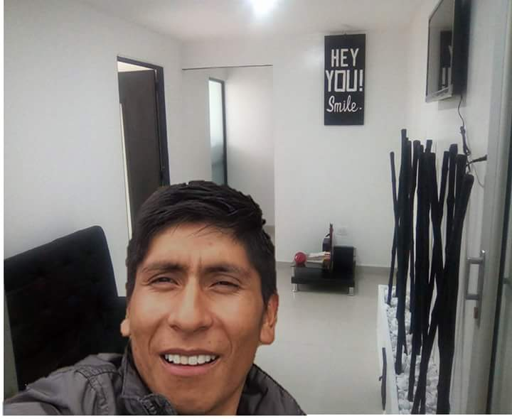
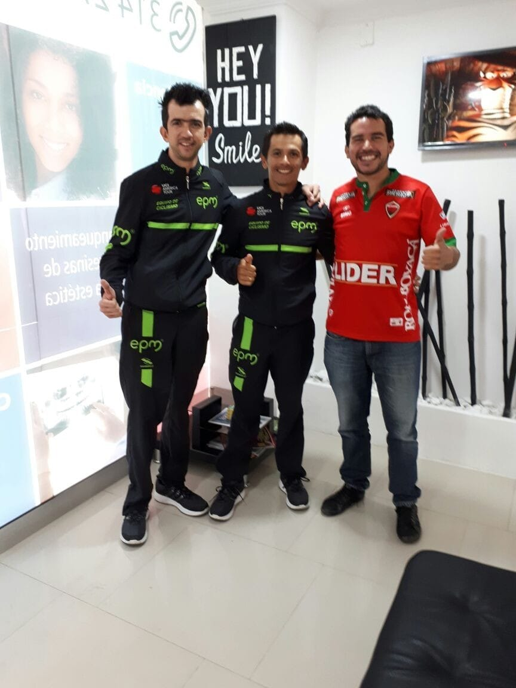
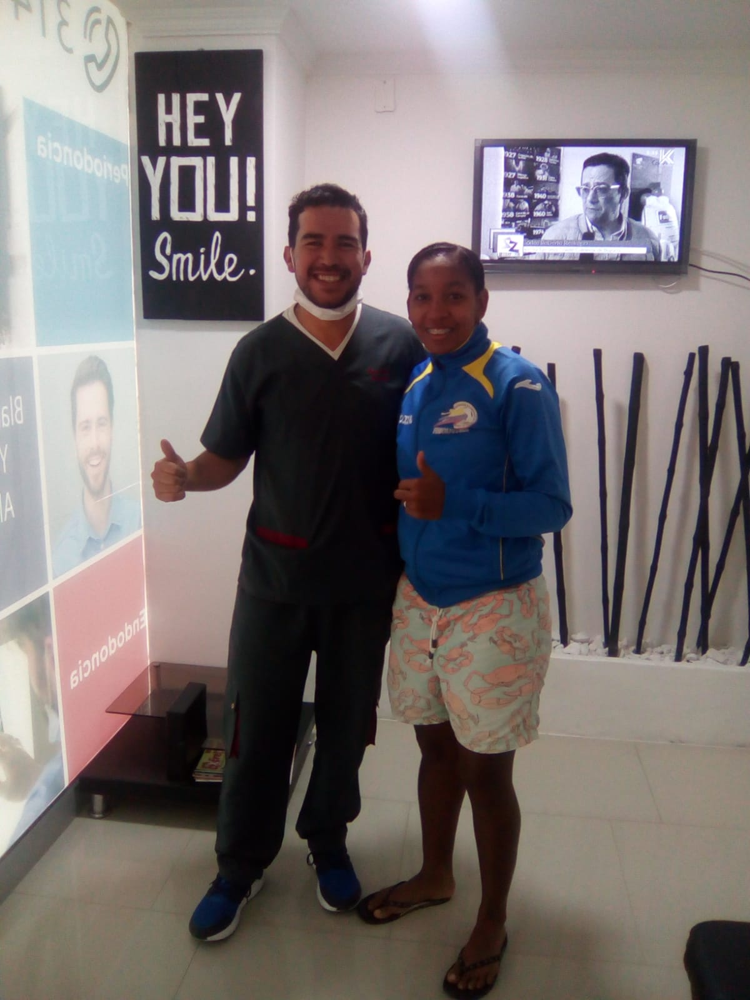
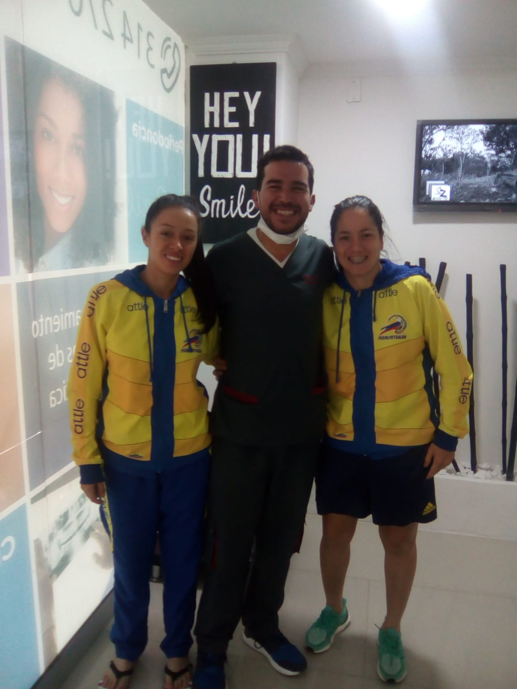
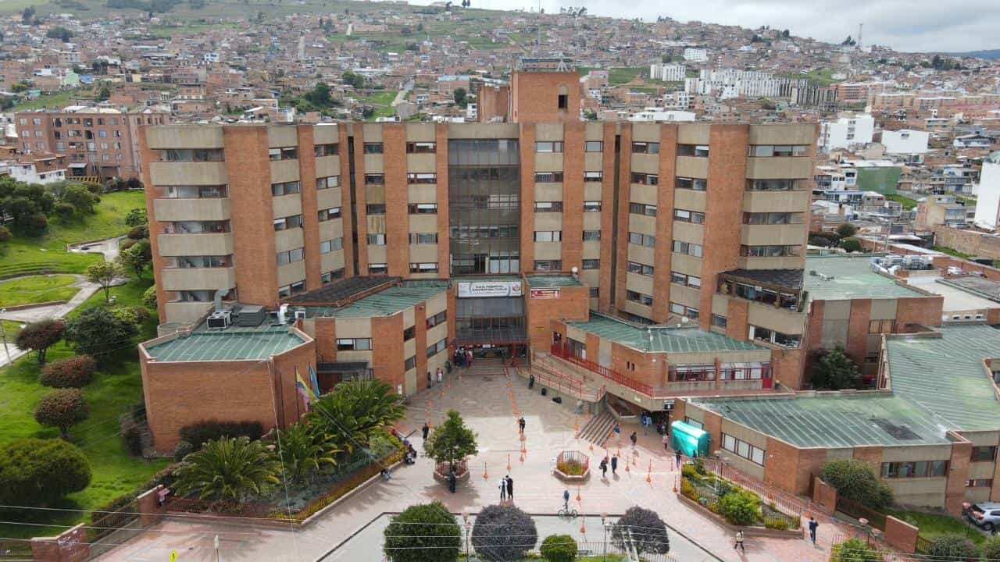
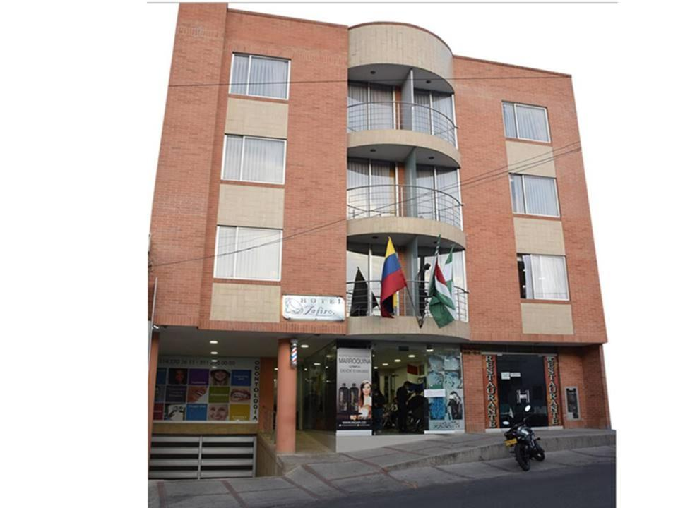

Figuras importantes que han visitado el consultorio
   
Lugares cercanos importantes
Hospital San Rafael
La ESE Hospital Universitario San Rafael de Tunja es una institución prestadora de servicios de salud de mediana y alta complejidad, con 85 servicios habilitados con el cumplimiento de los requisitos minimos para brindar seguridad a los usuarios segun lo definido en la Resolución No. 2003 de 2014 a través de la certificación No. 00000742 del 25 de Octubre de 2016 emitida por la Secretaria de Salud de Boyacá.
Hotel Zafiro
El HOTEL ZAFIRO PLAZA se encuentra en Tunja y ofrece salón compartido y terraza. Cuenta con restaurante, recepción 24 horas, servicio de habitaciones y WiFi gratuita. El hotel dispone de habitaciones familiares. Todas las habitaciones incluyen armario, TV de pantalla plana y baño privado. El HOTEL ZAFIRO PLAZA sirve un desayuno americano. Villa de Leyva se encuentra a 38 km del alojamiento, mientras que Duitama está a 50 km.
Peluquería Mareth

Peluquería Marath es una empresa con 14 años de experiencia en el área de la belleza y estética. Es una de las mejores alternativas en la ciudad de Tunja. La peluquería Mareth ofrece servicios de barbería, salón de belleza y arreglo de uñas.